21-静态资源加速cdn篇
阿里云cdn产品
https://www.aliyun.com/product/cdn
CDN通过广泛的网络节点分布，提供快速、稳定、安全、可编程的全球内容分发加速服务，支持将网站、音视频、下载等内容分发至接近用户的节点，使用户可就近取得所需内容，提高用户访问的响应速度和成功率。
什么是cdn
全称:Content Delivery Network或Content Ddistribute Network，即内容分发网络
将源网站的资源，缓存到全国各地的边缘服务器，提供给用户就近获取，降低源服务器的压力。
为什么需要cdn
优势：
如果你在经营一家网站，那你应该知道几点因素是你制胜的关键：
- 内容有吸引力
- 访问速度快
- 支持频繁的用户互动
- 可以在各处浏览无障碍
从网站的运营商业角度分析，网站每慢1秒，就会丢失很多的方可，甚至这些访客永远都不会再访问。
一个网页的加载，其实就是
css
js
html
png、gif、text等一堆资源的整合
如何快速的让客户端获取到这些资源是必要问题
CDN就是来拯救资源访问慢的问题的。
cdn特点
1.分布式全国都有节点，要看该cdn服务器的分布情况，覆盖情况
2.高速宽带
3.用户就近访问原则，智能解析
目前最主流的cdn产品，就是选择公有云cdn，以阿里云cdn为主
阿里云内容分发网络CDN（Content Delivery Network）是建立并覆盖在承载网之上，由遍布全球的边缘节点服务器群组成的分布式网络。阿里云CDN能分担源站压力，避免网络拥塞，确保在不同区域、不同场景下加速网站内容的分发，提高资源访问速度。
阿里云在全球拥有2800+节点。中国内地（大陆）拥有2300+节点，覆盖31个省级区域；海外、中国香港、中国澳门和中国台湾拥有500+节点，覆盖70多个国家和地区。全网带宽输出能力达150 Tbps。
CDN将源站资源缓存到阿里云遍布全球的加速节点，当终端用户请求访问和获取源站资源时无需回源，可就近获取CDN节点上已经缓存的资源，提高资源访问速度，同时分担源站压力。目前CDN部分节点已支持通过IPv6访问。
CDN接入快捷、简单，您不需要调整现有业务结构，也不需要进行复杂的配置，只需要在CDN控制台进行简单操作，即可将域名接入阿里云，享受全球链路加速服务。
通过快速入门，您可以轻松开启CDN加速服务。
总结特点就是，阿里云提供的cdn资源加速服务，只要你的网站静态资源放在阿里云cdn上，你的网站就可以为全国的用户，都提供高速的网站访问服务。
- 全国节点多，云南的兄弟可以秒级打开，佳木斯的兄弟也可以，如果你的网站为海外用户提供服务，也是一样，阿里云全球都有服务器节点。
- 稳定、高性能
- 充足的带宽，存储能力
- 完善的监控体系，7*24小时全网监控，及时告警。
cdn给网站带来了什么
- 为了实现跨运营商、跨地域的全网覆盖
互联不互通、区域ISP地域局限、出口带宽受限制等种种因素都造成了网站的区域性无法访问。CDN加速可以覆盖全球的线路，通过和运营商合作，部署IDC资源，在全国骨干节点商，合理部署CDN边缘分发存储节点，充分利用带宽资源，平衡源站流量。
- 为了保障你的网站安全
CDN的负载均衡和分布式存储技术，可以加强网站的可靠性，相当无无形中给你的网站添加了一把保护伞，应对绝大部分的互联网攻击事件。
- 为了异地备援
当某个服务器发生意外故障时，系统将会调用其他临近的健康服务器节点进行服务，进而提供接近100%的可靠性，这就让你的网站可以做到永不宕机。
- 为了节约成本投入
使用CDN加速可以实现网站的全国铺设，你根据不用考虑购买服务器与后续的托管运维，服务器之间镜像同步，也不用为了管理维护技术人员而烦恼，节省了人力、精力和财力。
- 为了让你更专注业务本身
CDN加速厂商一般都会提供一站式服务，业务不仅限于CDN，还有配套的云存储、大数据服务、视频云服务等，而且一般会提供7x24运维监控支持，保证网络随时畅通，你可以放心使用。并且将更多的精力投入到发展自身的核心业务之上。
简单理解cdn
- 通俗的说CDN就像是网络中的快递小哥，把资源高效的送到客户电脑上。
- 并且这个cdn快递员，还很智能，不是在横冲直撞
- 多个节点，且提供缓存（如同快递驿站，加速数据读取）
- 智能路线优化，选择就近节点
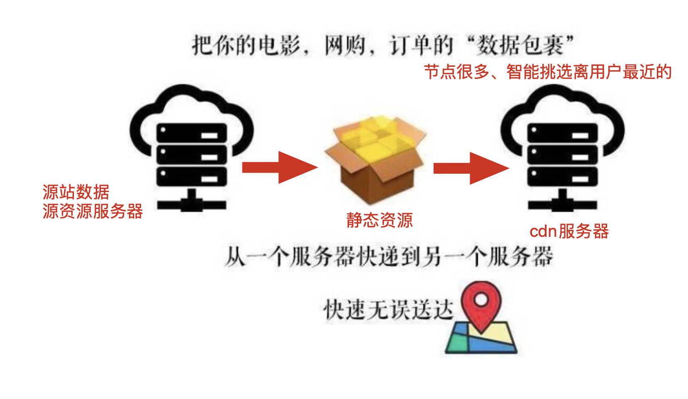
因此cdn的作用就是，无论你在世界任何角落，只要联网了，cdn服务就可以如同把源服务器搬到了你面前，让你高速的访问，带来极致体验。
来看看哪些企业在用阿里云cdn
阿里云CDN帮助众多客户解决了因分布、带宽、服务器性能带来的访问延迟问题，极大提升了用户体验。
| 典型客户 | 详细说明 |
|---|---|
| 天猫 | 依托阿里云CDN先进的分布式系统架构，天猫显著降低了业务带宽和运营成本。不仅加速了全球各地用户的日常访问，也从容应对历年双11购物节的极限访问挑战。 |
| 淘宝 | 淘宝PC端、手机淘宝等全部内容分发业务均由阿里云CDN支持，面对海量图片处理需求，毫秒级响应速度，图片加载达到秒刷效果，极大提升了用户体验。 |
| 支付宝 | 阿里云CDN全面支持支付宝金融业务。HTTPS加密通道访问，既提高了支付宝的用户体验，又有效防止了DNS和资源被劫持或篡改，保障了用户的信息和财产安全。 |
| UC | 阿里云CDN帮助UC的Web端显著降低了整体业务的带宽成本。配合OSS的存储服务，不仅降低了大量IT硬件投入的成本，也降低了开发及运维的难度，减少了工作量。 |
| 优酷 | 优酷的长视频、短视频、音频、图片等多媒体业务均由阿里云CDN提供访问加速服务，保证了PC端和手机端用户访问优酷内容时可以快速加载、稳定连接，极大地提升了用户的使用体验。 |
b站
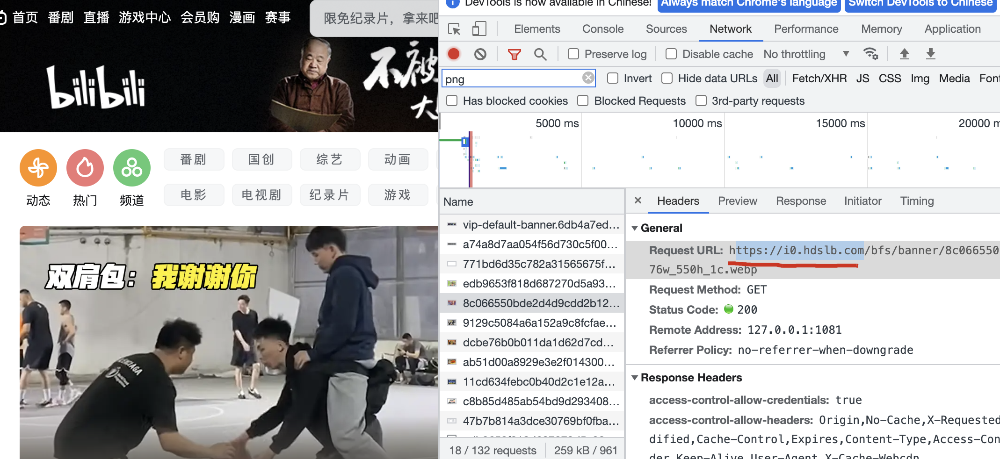
curl -I https://i0.hdslb.com/bfs/banner/8c066550bde2d4d9cdd2b1226f73a6d132800d2a.png@976w_550h_1c.webp
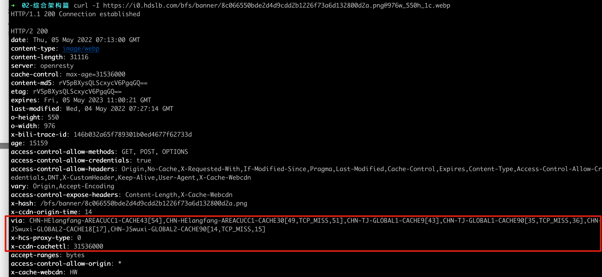
看到这一段信息，表示该资源使用的是cdn服务器。
淘宝网
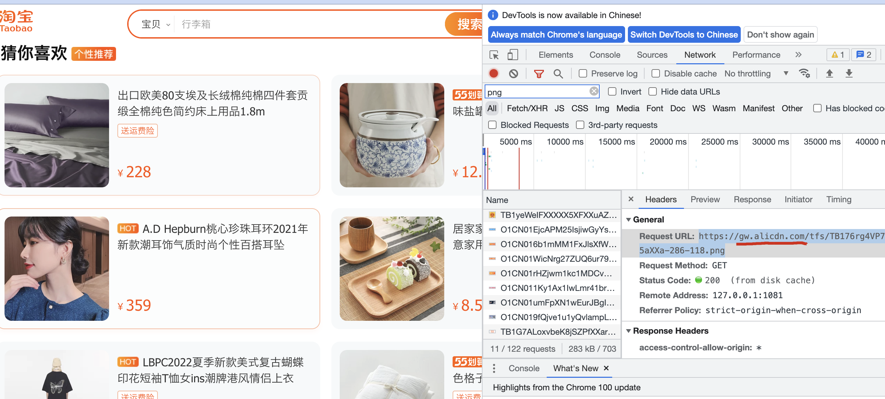
➜ 02-综合架构篇 curl -I https://gw.alicdn.com/tfs/TB176rg4VP7gK0jSZFjXXc5aXXa-286-118.png
HTTP/1.1 200 Connection established
HTTP/2 200
server: Tengine
content-type: image/png
content-length: 3239
date: Fri, 17 Dec 2021 06:59:30 GMT
expires: Wed, 15 Jun 2022 06:59:30 GMT
cache-control: max-age=15552000
last-modified: Tue, 15 Dec 2020 11:07:54 GMT
ali-swift-global-savetime: 1639724370
via: cache38.l2na63-1[0,0,200-0,H], cache20.l2na63-1[1,0], cache15.cn414[0,0,200-0,H], cache13.cn414[1,0]
access-control-allow-origin: *
age: 12010672
x-cache: HIT TCP_MEM_HIT dirn:12:98224203
x-swift-savetime: Sat, 30 Apr 2022 23:07:22 GMT
x-swift-cachetime: 3916328
s-rt: 1
timing-allow-origin: *
eagleid: 7d2787a116517350429458393e
依然是，只要看到x-cache响应头的信息，表示这个图片资源来自于cdn服务器。
没有使用cdn的资源
于超老师这个图片资源，就单独的放在了自己这台机器上，属于是源站服务器。
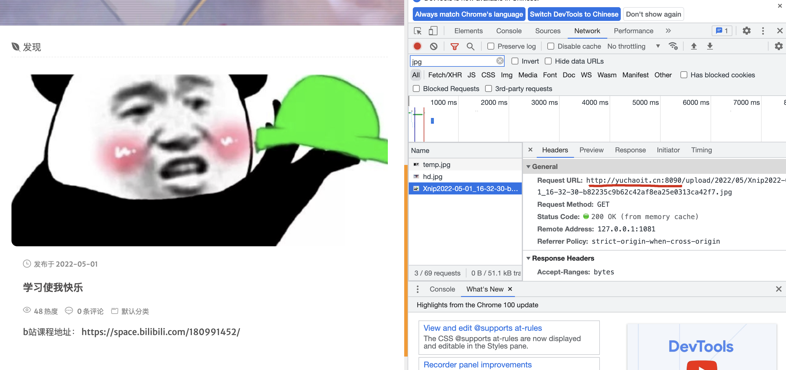
http://yuchaoit.cn:8090/upload/2022/05/Xnip2022-05-01_16-32-30-b82235c9b62c42af8ea25e0313ca42f7.jpg
cdn工作原理（重要）
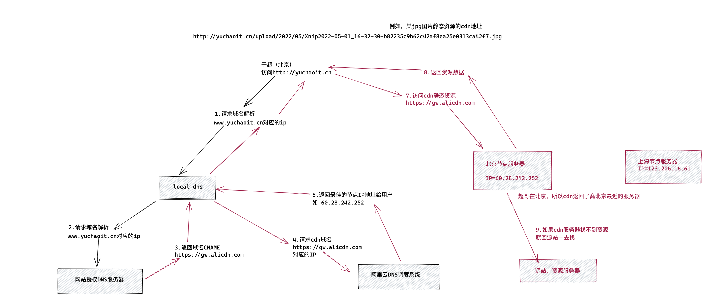
文字描述cdn工作原理
1.当用户（人在北京）访问www.yuchaoit.cn域名下的指定资源时，首先向本地DNS发起域名解析请求
2.LDNS检查缓存中是否有www.yuchaoit.cn的IP地址记录，有则直接返回给用户；没有向授权服务器发起DNS查询；
3.授权DNS服务器解析www.yuchaoit.cn时，返回域名的CNAME（又指向了另一个cdn域名）
4.此时该请求就已经发给了阿里云的cdn服务器，经过阿里云的DNS调度系统，返回该cdn域名对应的最佳IP地址（离该用户最近的）
5.此时LDNS获得阿里DNS返回的cdn解析的IP地址。
6.用户拿到了cdn的ip地址
7.用户向该ip发起资源请求。
- 如果该cdn对应的节点已经缓存了该静态资源，数据直接返回给用户
- 若cdn服务器中的资源过期或不存在，该节点会向源站发起该资源的请求，拿到资源后，结合用户设置的cdn缓存策略，将资源缓存到该节点，便于下次访问。
至此cdn请求结束。
CDN衡量指标
让你的网站静态资源使用了如阿里云提供的cdn加速服务，如何衡量它的确起了加速作用？不能白花这钱把，通过如下指标衡量
延时
网络延时指一个数据包从用户的计算机发送到网站服务器，然后再立即从网站服务器返回用户计算机的来回时间。
通俗的讲，就是数据从电脑这边传到那边所用的时间。
延时越低、性能约好。
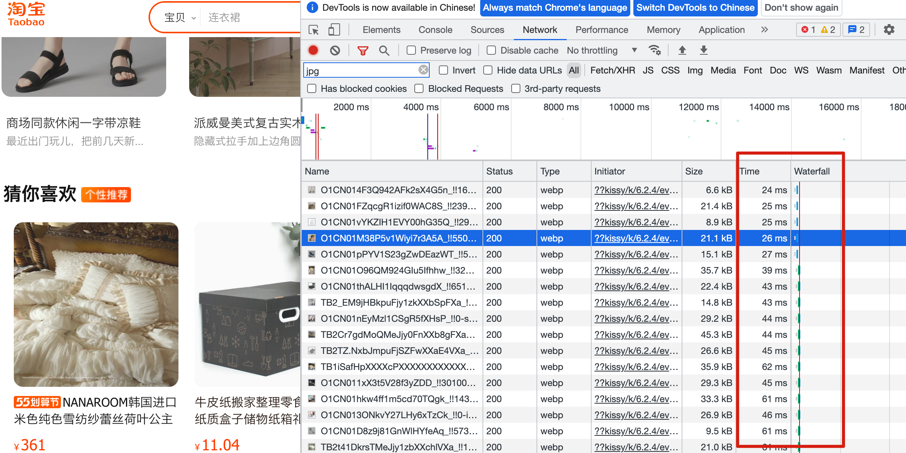
指标衡量表
参考阿里云
https://help.aliyun.com/document_detail/140425.html
| 指标 | 说明 |
|---|---|
| DNS时间 | 指从浏览器终端发起的访问请求开始，到浏览器终端获得最终访问主机IP地址所消耗的时间。 |
| TCP时间 | 指客户端与目标服务器建立TCP连接所消耗的时间。 |
| SSL时间 | 指客户端和Web服务器建立安全套接层（SSL）连接的消耗时间。 |
| 发送时间 | 指SSL握手完成开始发送请求到请求发送完成所消耗的时间。 |
| 建立连接时间 | 建立连接时间简称为建连时间，如果CDN节点使用HTTP协议加速客户业务，建连时间包含“DNS时间+TCP时间”；如果CDN节点使用HTTPS协议加速客户业务，建连时间包含“DNS时间+TCP时间+SSL时间”。建立连接的时间长短，可以反映CDN服务的节点资源覆盖的丰富程度以及调度能力。 |
| 响应时间 | 指浏览器发出HTTP请求后，Web服务器进行后台处理以及响应的时间。 |
| 下载用时 | 指您收到Web服务器返回的第一个数据包，到完成下载的总时间。 |
| 首包时间 | 指从客户端开始发送请求到收到服务器端返回的第一个HTTP协议数据包之间所需要的时间，首包时间可以反映出CDN服务节点的整体性能。在上传路径中，首包时间主要包含了DNS解析时间、TCP用时、SSL用时、发送时间和响应时间。在下载路径中，首包时间主要包含了DNS解析时间、TCP用时、SSL用时、发送时间和响应时间。说明 刚购买的域名，通常解析时间较长，和CDN的缓存时间无关。 |
| 整体性能 | 指完成整个文件的上传或下载所需要的总时长。 |
| 丢包率 | 指在网络传输中丢失数据包的数量占发送数据包总数的比率。 |
| 回源率 | 回源率分为回源请求数比例及回源流量比例两种：回源请求数比：指CDN节点（包括边缘节点和汇聚节点）对于没有缓存、缓存过期（可缓存）和不可缓存的请求占全部请求的比例。回源请求数比=CDN节点回源请求数÷用户访问CDN节点的总请求数，通常越低则性能越好（如果CDN回源做了分片，但是用户访问CDN没有分片，那么会出现CDN节点回源请求数远大于用户访问CDN的请求数的情况）。回源流量比：回源流量指的是CDN节点回源拉取资源的过程中源站响应给CDN节点的所有流量。回源流量比=源站响应给CDN节点的总字节数÷CDN节点响应给用户的总字节数，比值越低，性能越好。 |
| 缓存命中率 | CDN缓存命中率包括字节命中率和请求命中率，CDN缓存命中率通用指字节命中率，缓存命中率越高，性能越好。字节命中率=（CDN节点响应用户的总字节数-源站响应CDN节点的总字节数）÷CDN节点响应用户的总字节数。说明 字节缓存命中率越低，回源流量越大，源站的流出流量越大，源站的带宽资源以及其他的负载越大，因此回源流量代表了源站服务器接收到的负载压力，在业务使用中主要关心字节缓存命中率。请求命中率=（用户访问CDN节点的总请求数-CDN节点回源请求数）÷用户访问CDN节点的总请求数。 |
加速图片小文件的主要指标
图片小文件主要指HTML、JS、JPG、CSS等网页资源，延迟时间是决定高性能的关键，延迟越小，性能越好。以下指标均会影响延迟时间：
- 首包时间（最核心）。
- 建立连接时间。
- 传输时间（下载用时）。
针对图片小文件加速，阿里云CDN有专门的应用场景配置指导。详细信息，请参见图片小文件。
加速大文件下载的主要指标
大文件下载指单个文件的大小在20 MB以上的下载，该场景核心的指标为：
- 下载速度。
- 下载总时间。
针对大文件下载加速，阿里云CDN有专门的应用场景配置指导。详细信息，请参见大文件下载。
上传数据
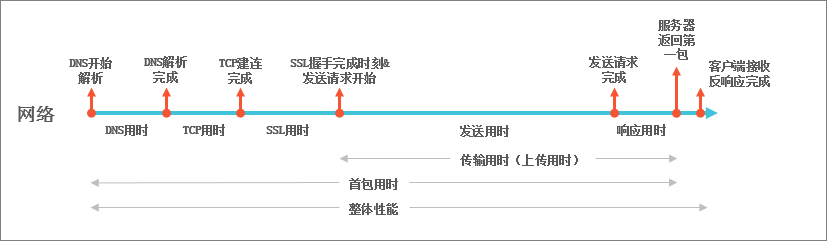
下载数据
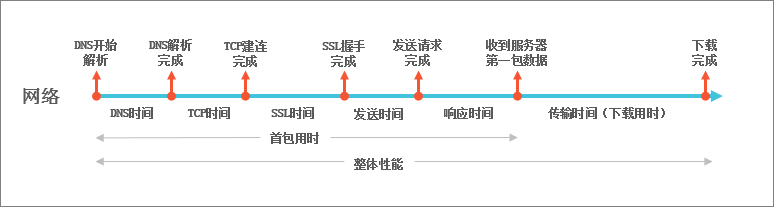
CDN常见概念
加速域名
使用阿里云CDN加速指定网站（源站）的业务前，需要添加源站加速域名，并接入CDN。
添加加速域名后，系统会将相关域名配置下发至全网CDN加速节点，此时不会影响您的现网业务。
简单说就是你需要使用cdn资源加速的域名
域名可以是一组服务器的地址，如*.yuchaoit.cn
可以是官网，邮件，ftp等各种服务
CNAME记录
成功添加加速域名后，CDN会为您分配一个CNAME域名。
您需要在域名解析服务商处将加速域名的DNS解析记录指向CNAME域名，访问请求才能转发到CDN节点上，实现CDN加速。
1.简单说就是 创建好了cdn后，会得到一个cdn域名
2.你需要将你需要加速的域名（如cdn.yuchaoit.cn），解析到这个cdn域名上（设置CNAME）
3.然后就会根据上述超哥讲的cdn工作原理开始解析
CNAME就是域名别名，用于把一个域名解析到另一个域名，再用另一个域名提供IP地址。
CNAME举例
- 你的网站静态数据原本都在
static.yuchaoit.cn这个机器上 - 现在想通过
pic.yuchaoit.cn也能访问到static.yuchaoit.cn的资源 - 因此就是给
pic.yuchaoit.cn配置一个CNAME域名解析到static.yuchaoit.cn - 以后访问
pic.yuchaoit.cn的请求，都会被转发给static.yuchaoit.cn获得相同的数据。
DNS
DNS就是域名解析，将域名转化为网络可识别的IP地址号。
域名是为了便于人类记忆，解析动作由域名服务器自动完成。
如
yuchaoit.cn
在权威服务器（腾讯云DNS）注册了解析关系
123.206.16.61
SSL、TLS、HTTPS
什么是HTTPS
HTTP协议以明文方式发送内容，不提供任何方式的数据加密。
HTTPS协议是以安全为目标的HTTP通道，简单来说，HTTPS是HTTP的安全版，即将HTTP用SSL/TLS协议进行封装，HTTPS的安全基础是SSL/TLS协议。
HTTPS提供了加密通讯方法，被广泛用于万维网上安全敏感的通讯，例如交易支付。
CDN设置https
在阿里云CDN控制台开启的HTTPS协议，将实现客户端和阿里云CDN节点之间请求的HTTPS加密。如果需要实现全链路HTTPS加密，还需要配置CDN节点以HTTPS协议回源到源站服务器（源站服务器需要支持HTTPS协议）。
HTTPS加密流程如下图所示。
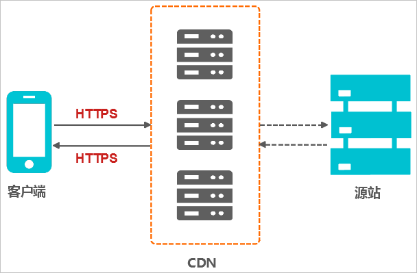
阿里云cdn实践
1.创建cdn加速域名
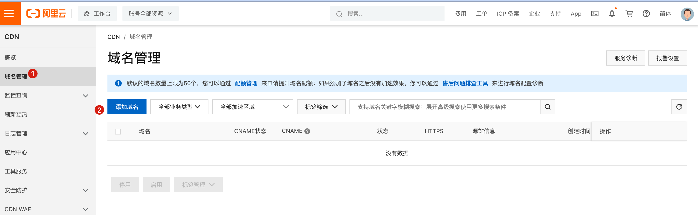
2.添加域名
1.添加加速域名
添加加速域名，也就是你暴露给用户的域名，支持泛域名
www.apecome.com
2.首次添加，需要添加dns解析txt记录
添加步骤
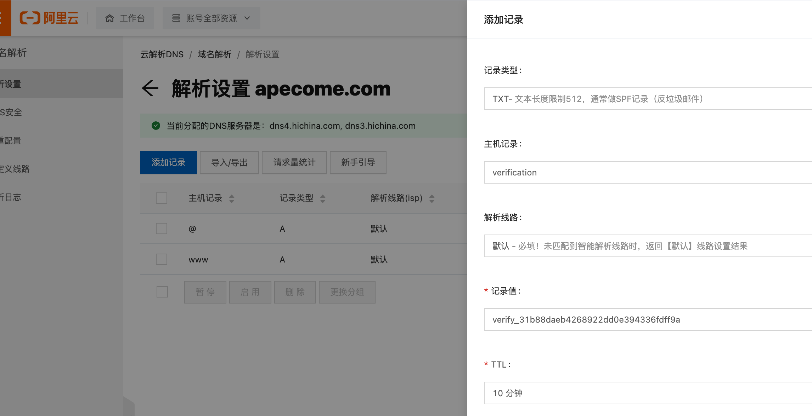
3.添加源站信息
也就是源数据根本是从哪个机器提供的。
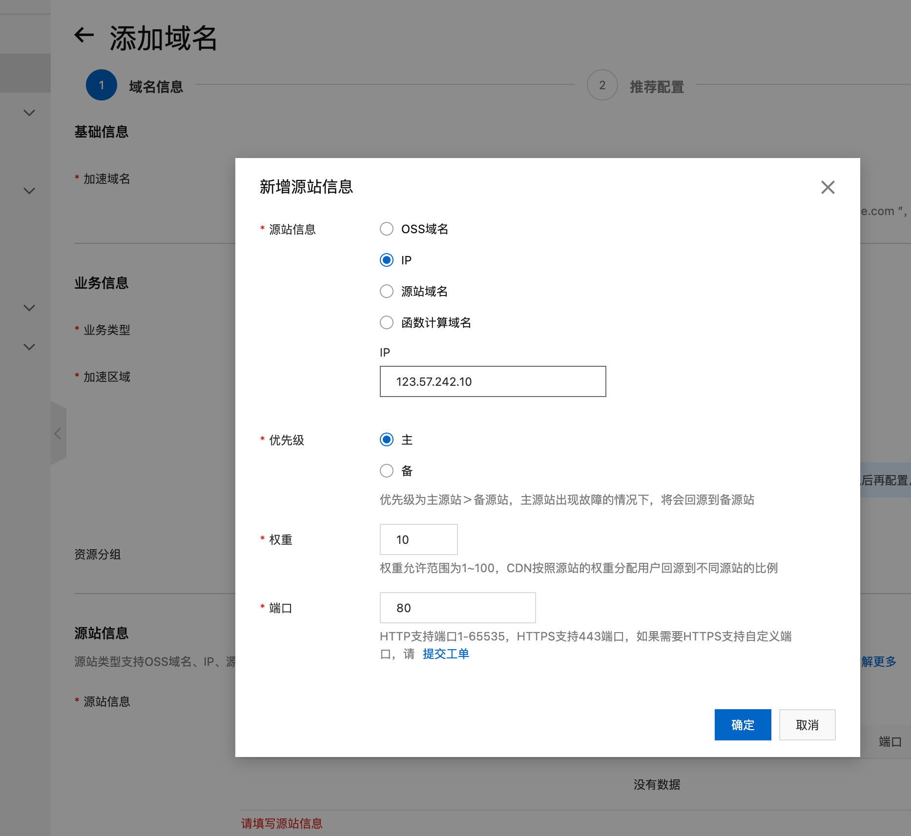
4.添加cdn域名成功
请注意，提示你，还剩下CNAME的配置，该cdn域名就可以用了。
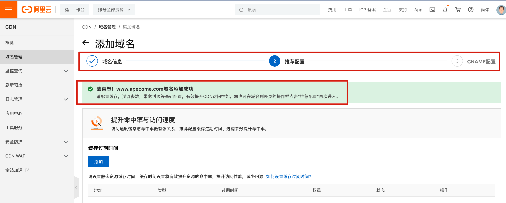
5.查看cdn域名
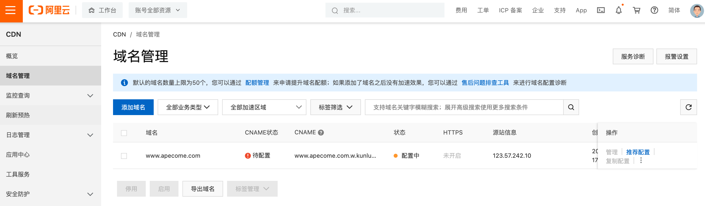
该cdn域名等待配置中，还未使用
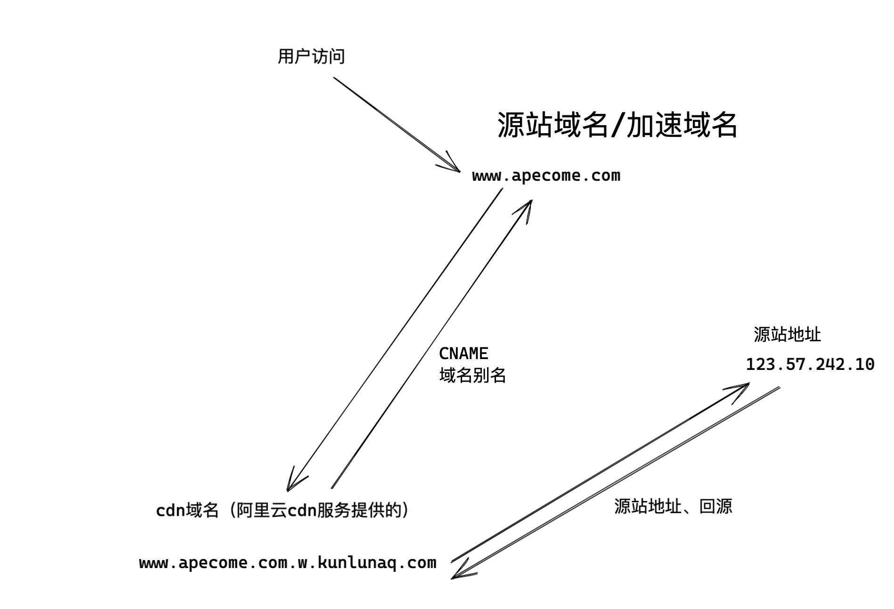
6.配置CNAME
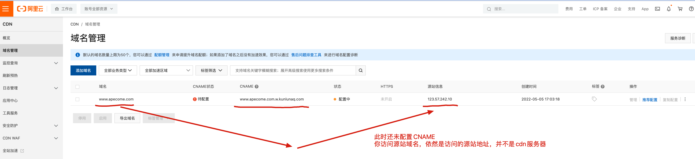
还未配置CNAME
➜ ~ nslookup www.apecome.com 223.5.5.5
Server: 223.5.5.5
Address: 223.5.5.5#53
Non-authoritative answer:
Name: www.apecome.com
Address: 123.57.242.10
配置CNAME
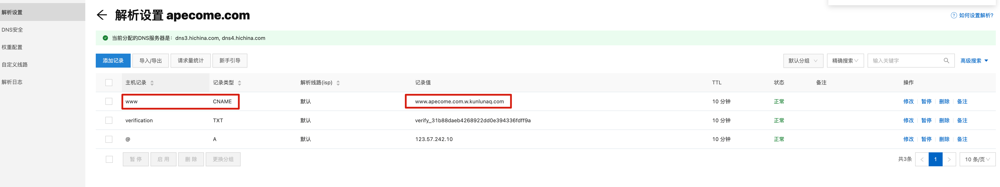
刷新cdn域名管理
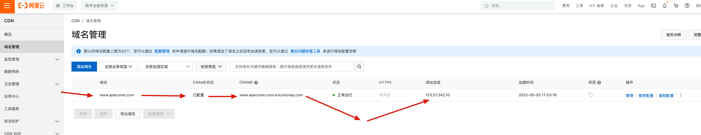
查看cdn解析记录
➜ ~ nslookup www.apecome.com 223.5.5.5
Server: 223.5.5.5
Address: 223.5.5.5#53
Non-authoritative answer:
www.apecome.com canonical name = www.apecome.com.w.kunlunaq.com.
Name: www.apecome.com.w.kunlunaq.com
Address: 121.29.38.136
7.添加cdn静态资源
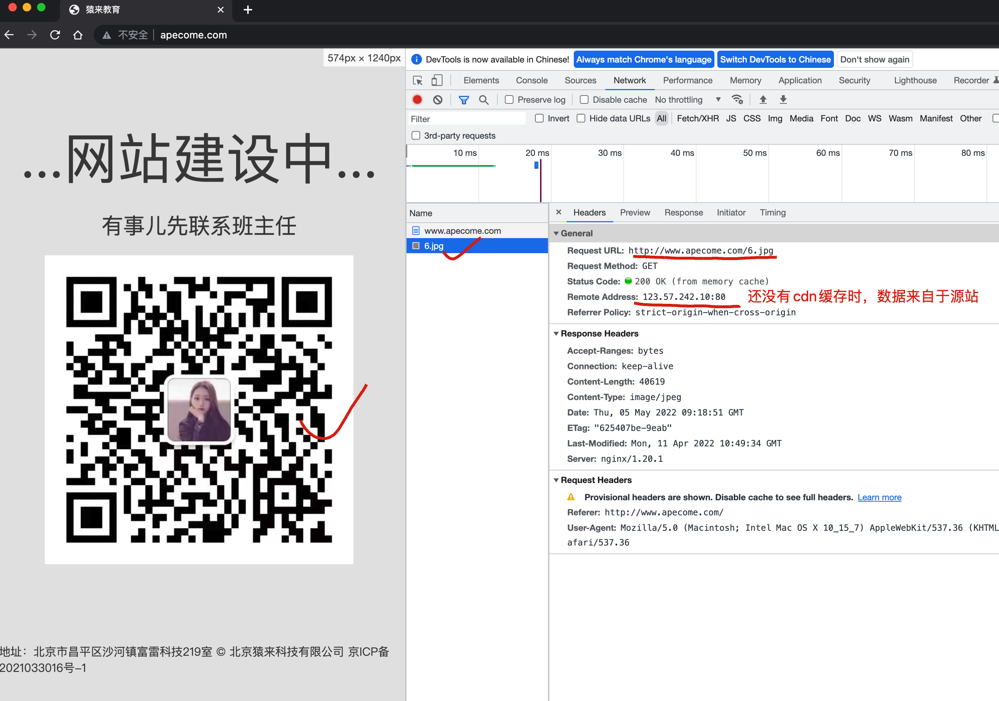
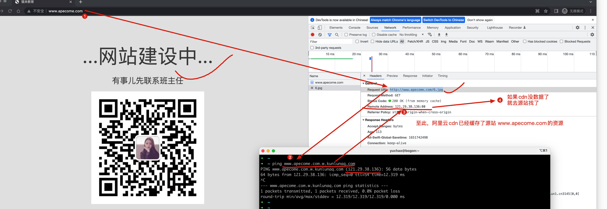
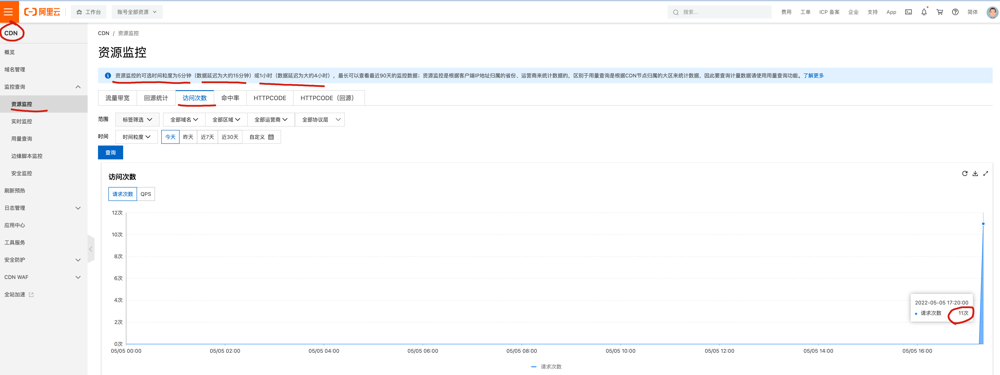
CDN常见问答
CDN加速是对网站所在服务器加速，还是对其域名加速？
CDN是只对网站的某一个具体的域名加速。
如果同一个网站有多个域名，则只有加入CDN的域名获得加速效果，访问未加入CDN的域名，或者直接访问IP地址，则无法获得CDN效果。
添加CDN后源网站需要修改吗
一般不需要任何修改操作，只需要修改加速域名，设置CDN加速。
为什么网站页面更新了，通过CDN看到依然是旧的数据
CDN有缓存机制，源站的网页更新后，CDN如果不重新缓存，因此看到就是旧数据。
因此CDN管理面板提供了URL推送功能，强制通知CDN刷新缓存。
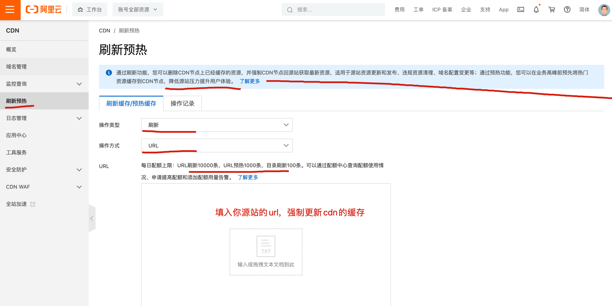
如何让CDN不缓存某些动态数据
一般做法是，源站的动态、静态数据，分为两个url解析，CDN只处理静态页面URL。
网站新增了一些数据，需要对URL推送吗？
不需要，因为新数据本身CDN缓存里就没有。